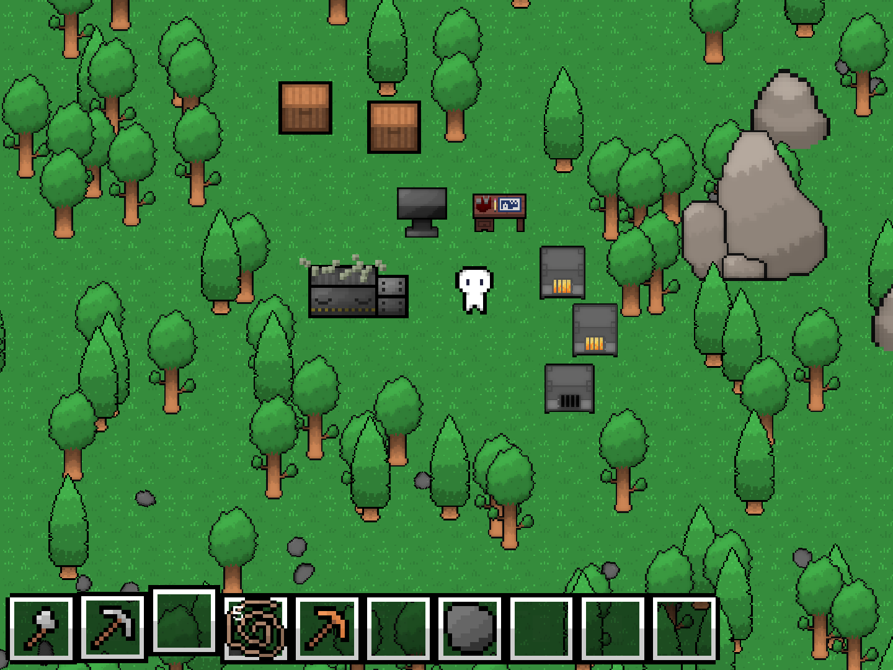
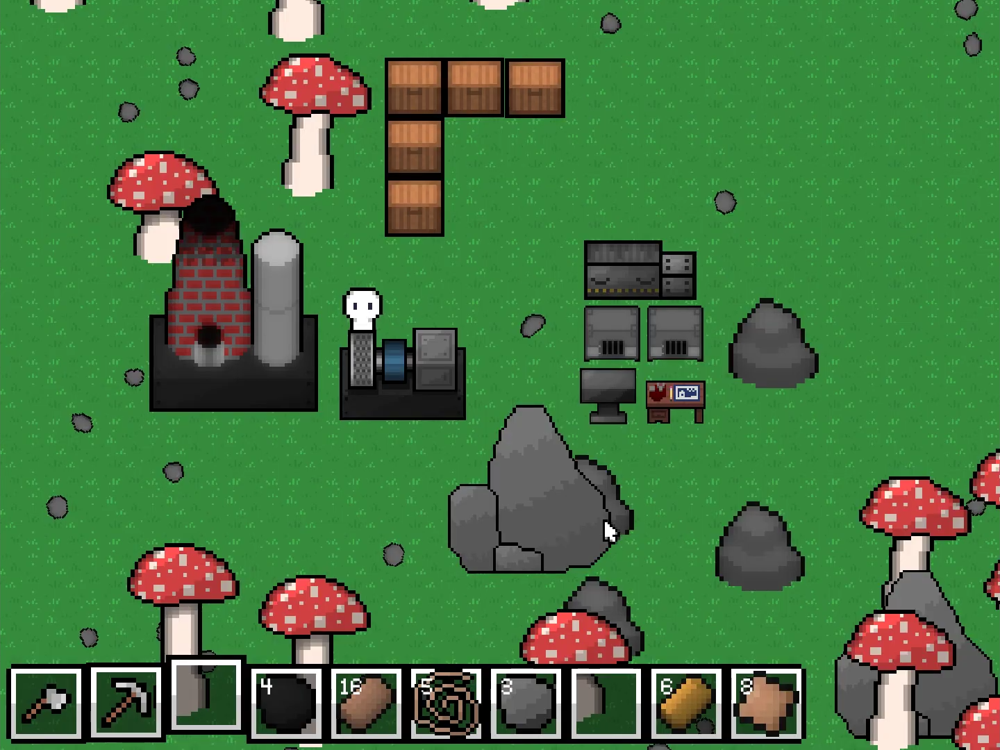

Survival and Development
The game starts with the crucial task of survival. Gathering food from bushes, growing crops, and hunting wild animals, players must meet their basic needs for food and water. Unlike other survival games, TheFactoryMustGrow sets a more complex challenge - constructing a full-scale production complex on the island.
Factory Construction
The player's goal is not just to survive but to build an advanced factory capable of producing the necessary technologies for evacuation from the island. To do that a player must collect resources, build machines, create automated production lines, and develop energy sources.
Metallurgy System
One of the features of TheFactoryMustGrow is its glance on metallurgy system. Players can explore several methods of mining, processing, and combining metals to create alloys used in machine construction and building materials.
Strategy and Creativity
The players get an opportunity to enhance their logical thinking, strategic planning, and creative skills. From constructing basic survival tools to developing intricate production chains and energy systems, players must find new ways to efficiently use the island's limited resources.

The ultimate goal of the game is to create a mechanism for escaping the island, which requires not only survival and factory building but also a profound understanding of technological processes. TheFactoryMustGrow promises players a challenging yet immensely engaging adventure, where every decision matters, and every problem opens up new opportunities for innovation.